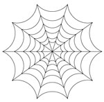

1° LIVELLO DI POTERE
| Battlefate | Charm | |
| Sphere : | Charm | |
| Range : | 18 metri |
 |
| Components : | V, S, M | |
| Duration : | 4 round + 1 round/2 livelli | |
| Casting Time : | 4 | |
| Area of Effect : | Una creatura | |
| Saving Throw : | None |
Quando il chierico lancia questa magia invoca il potere delle propria divinità affinché renda la creatura beneficiaria più forte in battaglia. Per tutta la durata dell'incantesimo, che è pari a 4 round + 1 round ogni due livelli di lancio della magia (5 round al 1° e 2° livello, 6 round al 3° e 4° livello, 7 round al 5° e 6° livello, e così via...) fino ad un massimo di 10 round all'11° livello di lancio, chi riceve gli effetti di questa magia dovrà tirare 1d6 nella fase delle intenzioni per determinare il beneficio ricevuto. Il tiro va ripetuto all'inizio di ogni nuovo round di combattimento. Per determinare il beneficio si consulti, dunque, la seguente tabella:
| TIRO | BENEFICIO |
| 1 | Nessun beneficio sarà applicato nel round |
| 2 | Difesa Migliorata, si applichi il bonus alla Classe Armatura |
| 3 | Attacco Migliorato, si applichi il bonus ai Tiri per Colpire |
| 4 | Danno Potenziato, si applichi il bonus ai Danni |
| 5 | Resistenza Maggiorata, si applichi il bonus ai Tiri Salvezza |
| 6 | Il beneficiario può scegliere che beneficio applicare nel round |
Si noti che il bonus previsto per i danni sarà applicato solo ai danni principali prodotti dagli attacchi effettuati dalla creatura non applicandosi, ad esempio, ai danni prodotti da poteri speciali, ai danni supplementari prodotti con arti di combattimento od ai danni prodotti tramite il lancio delle magie. L'ammontare del bonus applicato al beneficiario dipende dal livello di lancio della magia. In particolare sarà applicato un bonus di +1 se la magia è utilizzata dal 1° al 4° livello di lancio ed un bonus di +2 se la magia è utilizzata a partire dal 5° livello di lancio. Si osservi che questi bonus, come del resto ogni altro bonus di origine divina, non si cumulano con bonus, sempre di origine divina, che incidano sul medesimo tiro od effetto. Il componente materiale di questo incantesimo è una moneta di metallo con inciso il simbolo della divinità dal costo di 3 monete d'oro e dal peso pari ad 1/10 di libbra che si consuma al lancio dell'incantesimo.
| Call Upon Faith | Summoning |
| Sphere : | Summoning |
| Range : | 0 |
| Components : | V, S, M |
| Duration : | Speciale |
| Casting Time : | 1 |
| Area of Effect : | The Caster |
| Saving Throw : | None |
Prima di iniziare una qualsiasi difficile azione il chierico può invocare l'aiuto della propria divinità. In questo modo il chierico otterrà un beneficio corrispondente ad un bonus +3 (+15%) che potrà applicare ad un singolo tiro necessario ad effettuare il compimento dell'azione. Questo beneficio può essere utilizzato solo per il compimento di un'azione che inizi e si concluda nel round immediatamente successivo a quello del lancio della presente magia. Si noti che questo incantesimo non può essere utilizzato nel caso in cui il chierico desideri effettuare un'azione consistente nell'invocare un intervento divino. Il componente materiale di questo incantesimo è il simbolo sacro del chierico.
| Cause Fear | Charm |
| Sphere : | Charm |
| Range : | 9 metri |
| Components : | V, S |
| Duration : | 1d3 round |
| Casting Time : | 3 |
| Area of Effect : | Una creatura |
| Saving Throw : | Negates |
Quando il chierico lancia questa magia la vittima ha diritto a superare un tiro salvezza su coraggio. Se il tiro salvezza fallisce la vittima sarà terrorizzata dal chierico e non compierà alcuna altra azione se non fuggire alla maggiore distanza possibile dallo stesso per l'intera durata dell'incantesimo. La vittima, in ogni caso, fuggirà utilizzando le sue comuni modalità di movimento non ricorrendo all'utilizzo di metodi magici di teletrasporto o di oggetti magici (si pensi ad una pozione gassosa od una pozione del ritorno). Se impossibilitata a scappare la vittima resterà ferma e si limiterà a difendersi passivamente senza ottenere alcuna penalità ma non potendo utilizzare poteri od abilità speciali, punti o manovre di combattimento.
| Combine | Summoning |
| Sphere : | All |
| Range : | Tocco |
| Components : | V, S |
| Duration : | Speciale |
| Casting Time : | 1 round |
| Area of Effect : | Speciale |
| Saving Throw : | None |
Questo incantesimo cumulativo può essere utilizzato da due a quattro chierici. La magia, per precisione, viene utilizzata sempre sul chierico del livello di esperienza più lato (in caso di chierici di pari livello su uno a loro scelta) da quelli di livello più basso. Costoro lanciano la magia toccando il chierico che deve ottenere gli effetti benefici. Quest'ultimo quindi potrà considerarsi, fino a che perdura questa magia, di un livello di esperienza superiore per ogni chierico che ha utilizzato su di lui questo incantesimo al solo fine di effettuare un'azione di scacciare o controllare i non morti e di determinare il livello di lancio dei propri incantesimi. Si noti che, nonostante il chierico possa lanciare magie ad un livello di lancio superiore, questo incantesimo non permette al chierico di accedere a magie diverse da quelle alle quali aveva regolarmente accesso né di ottenere punti preghiera supplementari. Per funzionare la magia richiede che il chierico beneficiario non si sposti dalla posizione occupata al momento del suo lancio nonché il mantenimento della concentrazione da parte dei chierici che l'hanno lanciata i quali, se attaccati durante il mantenimento della concentrazione, saranno considerati (sempre che non decidano di interromperla) come se fossero storditi [stunned]. Se, per qualsiasi motivo, viene meno la concentrazione del chierico che ha lanciato questo incantesimo od il suo contatto fisico con il beneficiario (ad es. il chierico che ha lanciato la magia si sposta o cade al suolo knockdown) la magia terminerà immediatamente solo in relazione al chierico che ha interrotto la concentrazione. Se, invece, è il chierico che beneficia di questa magia a spostarsi dalla posizione originariamente occupata (od a cadere al suolo knockdown) costui farà venir meno tutte le magie di combine che gli erano state lanciate. Si noti, infine, che se è solo il chierico beneficiario a perdere la concentrazione nel lancio delle sue magie ciò non influenzerà gli incantesimi di combine che gli erano stati lanciati addosso.
| Command | Charm | |
| Sphere : | Law | |
| Range : | 15 metri | |
| Components : | V | |
| Duration : | Speciale | |
| Casting Time : | 1 | |
| Area of Effect : | Una creatura | |
| Saving Throw : | Speciale |
Questo incantesimo mentale permette al chierico di comandare un'altra creatura utilizzando una singola parola. Per poter avere effetto la magia deve essere lanciata su una creatura intelligente (almeno Low Intelligent 5-7) che sia in grado di udire e comprendere la parola di comando utilizzata dal chierico (deve, ad esempio, conoscere la lingua utilizzata dal chierico). Nel round immediatamente successivo a quello di lancio, quindi, la creatura obbedirà meccanicamente al comando dato dal chierico. Il chierico può imporre alla creatura qualsiasi comando possa esprimere ragionevolmente utilizzando un'unica parola. Se il comando risulta di impossibile esecuzione la magia fallirà miseramente. Ogni comando di tipo suicida, comportante in via diretta la morte della creatura (si pensi al comando di buttarsi nella lava o in un precipizio) e lo stesso comando "suicidati" sarà automaticamente ignorato e farà fallire la magia. Unica eccezione è rappresentata dal comando "muori" o da comandi ad esso equivalenti (si pensi a "svieni" e "stordisciti"). In questo caso, la creatura si considererà stordita (stunned) per l'intero round successivo a quello di lancio dell'incantesimo. Comandi del genere "fermati", "bloccati", "paralizzati" e comandi ad essi equivalenti renderanno la creatura impedita (hindered) per l'intero round successivo a quello di lancio dell'incantesimo. Ogni comando comportante un serio pregiudizio per gli interessi o per l'incolumità fisica della creatura (si pensi al comando di gettare le armi nel corso di un combattimento, oppure al comando di entrare nel fuoco o in una nube tossica) potrà essere disobbedito dalla creatura la quale, però, sarà considerata impedita (hindered) per l'intero round successivo al lancio della magia. Deve puntualizzarsi che la magia ha effetto solo nel round immediatamente successivo a quello di lancio, essendo la vittima libera di agire senza limitazioni successivamente allo stesso. La magia ha effetto direttamente sulle menti deboli, infatti, hanno diritto ad un tiro salvezza su mente per evitarne gli effetti solo le creature che posseggono 5 o più dadi vita o livelli e quelle dotate di elevata intelligenza (almeno Highly intelligent 13-14).
| Darkness | Alteration |
| Sphere : | Protection |
| Range : | 21 metri (Devoti di Garanòt: 30 metri) |
| Components : | V, S |
| Duration : | 1 turno (Devoti di Garanòt: 3 turni) |
| Casting Time : | 4 (Devoti di Garanòt: 3) |
| Area of Effect : | Sfera di 9 metri di diametro |
| Saving Throw : | None |
Lanciando questo questo incantesimo il chierico oscura la luce presente nell'area d'effetto. Tale sfera di oscurità, inamovibile, impedisce anche il funzionamento dell'infravisione ma non la sua attivazione. Chi si trova all'interno dell'area si troverà immerso in una cortina di buio e non vedrà la luce proveniente dall'esterno. Chi si trova fuori l'area, invece, vedrà una sfera nera che impedirà di guardare dentro ed attraverso la stessa. Una magia di light od una altra magia di luce in grado di illuminare come o di più della magia light, che sia lanciata sull'effetto del darkness con l'intenzione di eliminarlo lo dissolverà non sortendo, però, alcun altro effetto.
| Detect Magic | Divination |
| Sphere : | Divination |
| Range : | 0 |
| Components : | V, S, M |
| Duration : | 1 round |
| Casting Time : | 1 round |
| Area of Effect : | The Caster |
| Saving Throw : | None |
Quando il chierico lancia questo incantesimo riesce a percepire la luminosità delle aure magiche presenti entro 30 metri di distanza dallo stesso. Per poter percepire la luminosità dell'aura, però, il chierico deve poter vedere, anche se parzialmente, l'oggetto o la zona in cui l'aura è in effetto. Un chierico non potrà vedere, ad es. l'aura di un oggetto magico che si trova all'interno di uno zaino o sepolto da macerie. In base all'intensità dell'aura, inoltre, il chierico potrà determinare la potenza dell'incantamento. Se si tratta di effetti magici dovuti ad incantesimi, quindi, il chierico potrà determinare il livello di potere della magia di cui analizza gli effetti. Se, invece, si tratta di oggetti magici costui potrà determinarne la potenza dell'incantamento come indicata nella seguente scala:
|
POTENZA DELL'INCANTAMENTO |
PUNTI ESPERIENZA |
| Least Minor Enchantment | 75 punti esperienza |
| Lesser Minor Enchantment | 100 punti esperienza |
| Minor Enchantment | 150 punti esperienza |
| Superior Minor Enchantment | 250 punti esperienza |
| Greater Minor Enchantment | 375 punti esperienza |
| Lesser Enchantment | 500 punti esperienza |
| Superior Enchantment | 1000 punti esperienza |
| Greater Enchantment | 1500 punti esperienza |
Il componente materiale di questo incantesimo è il simbolo sacro del chierico.
| Detect Poison | Divination |
| Sphere : | Divination |
| Range : | 30 metri |
| Components : | V, S, M |
| Duration : | Istantanea |
| Casting Time : | 4 |
| Area of Effect : | Una creatura od un oggetto |
| Saving Throw : | None |
Quando il chierico lancia questo incantesimo riesce a percepire se l'oggetto o la creatura indicata durante il lancio della magia è velenoso od è stato avvelenato. Risulterà velenosa qualsiasi creatura abbia capacità venefiche. Il chierico potrà ad esempio individuare un'arma od una bevanda che è stata avvelenata. Si noti che il chierico non rileverà come velenosi gli oggetti magici che solo quando attivati diventino tali a meno che la magia non sia lanciata durante la loro attivazione (ciò contrariamente a quegli oggetti che sono sempre potenzialmente velenosi ma che richiedono un particolare tiro per infondere il loro veleno, si pensi ad un'arma di arcanite che risulterà sempre velenosa). Il chierico, inoltre, avrà una possibilità pari al 5% per livello di lancio dell'incantesimo (fino ad un massimo del 95%) di determinare anche la tipologia e gli effetti specifici del veleno che ha individuato. Il componente materiale di questo incantesimo è una striscia di velluto bianco che diventa nero se l'oggetto dell'incantesimo è velenoso od è stato avvelenato. Comunemente 10 strisce di questo velluto hanno un costo di 3 monete d'oro ed un peso pari ad 1 libbra. Il componente si consuma al lancio dell'incantesimo.
| Endure Cold and Heat | Abjuration |
| Sphere : | Protection |
| Range : | Tocco |
| Components : | V, S, M |
| Duration : | 24 ore |
| Casting Time : | 1 round |
| Area of Effect : | Una creatura |
| Saving Throw : | None |
Questo incantesimo protegge la creatura che lo riceve dal calore e dal freddo. In particolare, per un'intera giornata, chi riceve questo incantesimo non patirà gli effetti di temperature molto basse o molto alte resistendo da -20° a 50° centigradi anche indossando dei comuni vestiti. Qualora il personaggio si trovi esposto a temperature che superano le soglie di resistenza la magia terminerà immediatamente. Qualora, inoltre, il personaggio subisce una qualsiasi forma di danno (sia di origine magica che naturale) da freddo, fuoco o calore la magia terminerà immediatamente ma il primo danno di questo tipo subito sarà ridotto di 2 punti danno + 1 punto danno per livello di lancio della magia (fino ad un massimo di 10 punti danno all'8° livello di esperienza). Questa magia, infine, terminerà immediatamente qualora chi l'ha ricevuta si sottopone agli effetti di una qualsiasi altra protezione magica al freddo, al fuoco od al calore. Il componente materiale di questo incantesimo è il simbolo sacro del chierico.
| Malison | Necromancy |
| Sphere : | All |
| Range : | 0 |
| Components : | V, S, M |
| Duration : | 6 rounds |
| Casting Time : | 1 round |
| Area of Effect : | Speciale |
| Saving Throw : | Negates |
Attraverso questa magia il chierico invoca la maledizione della propria divinità sui suoi avversari. La magia influenzerà una creatura per ogni livello di lancio della stessa (fino ad un massimo di 10 creature al 10° livello di lancio) che si trovino ad una distanza massima di 30 metri dal chierico al momento del lancio dell'incantesimo. Le vittime hanno diritto ad un tiro salvezza su magia per evitare gli effetti della magia. Chi si trova sotto gli effetti di questo incantesimo riceve un malus di -1 a tutti i tiri per colpire e di -1 ai tiri salvezza contro paura. Si noti che questi malus, come del resto ogni altro malus di origine divina, non si cumulano con malus, sempre di origine divina, che incidano sul medesimo tiro od effetto. Il componente materiale di questo incantesimo è una boccetta d'acqua santa che si consuma al momento del lancio.
| Protection from Chaos | Abjuration | |
| Sphere : | Law | |
| Range : | Tocco | |
| Components : | V, S, M | |
| Duration : | 3 round per livello | |
| Casting Time : | 4 | |
| Area of Effect : | Una Creatura | |
| Saving Throw : | None |
Questo incantesimo protegge la creatura che lo riceve in tre diverse modalità:
1) Tutte le creature di indole caotica (allineamento chaotic) che attaccano chi
è protetto da questo incantesimo ricevono -2 ai loro tiri per colpire. Inoltre,
qualora creature della medesima indole impongano in via diretta (ad esempio
attraverso un incantesimo od un'abilità speciale) a chi è protetto da questa
magia il superamento di un qualsiasi tiro salvezza quest'ultimo riceverà un
bonus di +2 al tiro per superarlo. I medesimi benefici si applicano nei
confronti delle creature che, sebbene non siano di indole caotica, si trovano
sotto gli effetti di una qualsiasi forma di confusione magica.
2) La protezione magica previene il contatto fisico tra il corpo di chi riceve
questo incantesimo ed il corpo di qualsiasi creatura di indole caotica che sia
di origine extraplanare (si pensi ad esempio ad un elementale od ad un essere
demoniaco) nonché con quello di creature, sempre di indole caotica, "richiamate"
nel Primo Piano Materiale tramite magie della scuola Summoning od effetti magici
e rituali ad esse equivalenti. Si noti che la protezione magica previene solo il
contatto fisico diretto tra i due corpi impedendo ad esempio l'utilizzo di
attacchi fisici naturali o di poteri attivabili a tocco. Non saranno, invece,
impediti attacchi che avvengono attraverso l'uso di armi nonché ogni forma di
attacco o di utilizzo di potere a distanza. Se chi è protetto da questa magia,
però, effettuerà una qualsiasi forma di attacco nei confronti di una creatura
che era impossibilitata a toccarlo questa seconda forma di protezione sarà
immediatamente interrotta esclusivamente nei confronti della specifica creatura
attaccata.
3) La protezione magica dona a chi la riceve una possibilità di resistere al
magico (magic resistance) pari al 10% + 5% per livello di lancio nei confronti
di qualsiasi incantesimo clericale della sfera Chaos. Si noti che questa
resistenza al magico non può essere in alcun caso annullata dal beneficiario per
l'intera durata dell'incantesimo.
Il componente materiale di questo incantesimo è un anello d'oro forgiato da un
fabbro di indole legale dal valore minimo di 12 g.p. e dal peso di 1/10 di
libbra che si consuma al lancio dell'incantesimo.
| Protection from Good | Abjuration |
| Sphere : | Protection |
| Range : | Tocco |
| Components : | V, S, M |
| Duration : | 3 rounds / livello |
| Casting Time : | 4 |
| Area of Effect : | Creatura toccata |
| Saving Throw : | None |
Questo incantesimo
protegge la creatura che lo riceve in due diverse modalità:
1) Tutte le creature di indole buona (allineamento good) che attaccano chi è
protetto da questo incantesimo ricevono -2 ai loro tiri per colpire. Inoltre,
qualora creature della medesima indole impongano in via diretta (ad esempio
attraverso un incantesimo od un'abilità speciale) a chi è protetto da questa
magia il superamento di un qualsiasi tiro salvezza quest'ultimo riceverà un
bonus di +2 al tiro per superarlo.
2) La protezione magica previene il contatto fisico tra il corpo di chi riceve
questo incantesimo ed il corpo di qualsiasi creatura di origine extraplanare (si
pensi ad esempio ad un elementale od ad un essere angelico) nonché con quello
di creature "richiamate" nel Primo Piano Materiale tramite magie della scuola Summoning od effetti magici e rituali ad esse equivalenti. Si noti che la
protezione magica previene solo il contatto fisico diretto tra i due corpi
impedendo ad esempio l'utilizzo di attacchi fisici naturali o di poteri
attivabili a tocco. Non saranno, invece, impediti attacchi che avvengono
attraverso l'uso di armi nonché ogni forma di attacco o di utilizzo di potere a
distanza. Se chi è protetto da questa magia, però, effettuerà una qualsiasi
forma di attacco nei confronti di una creatura che era impossibilitata a
toccarlo questa seconda forma di protezione sarà immediatamente interrotta
esclusivamente nei confronti della specifica creatura attaccata.
Il componente materiale di questo incantesimo è una fiaschetta di acqua santa o
una dose di incenso bruciata in un incensiere che si consumano al lancio
dell'incantesimo.
| Sanctuary | Abjuration | |
| Sphere : | Protection | |
| Range : | Tocco |
 |
| Components : | V, S, M | |
| Duration : | 2 rounds + 1 round/livello | |
| Casting Time : | 4 | |
| Area of Effect : | Una creatura | |
| Saving Throw : | Speciale |
Quando il chierico lancia questa magia la creatura che la riceve viene protetta dalla divinità agli occhi dei propri nemici. Tutte le creature ostili alla creatura protetta presenti al momento del lancio o che la incontrino nel corso della durata della magia devono effettuare un tiro salvezza contro incantesimi. Se il tiro salvezza è fallito costoro perderanno la consapevolezza della presenza della creatura protetta agendo come se la stessa non fosse presente per tutta la durata dell'incantesimo. Se, però, la creatura protetta effettuerà una qualsiasi azione possa essere considerata, anche in senso lato, offensiva (sia direttamente che indirettamente) nei confronti di una qualsiasi creatura (non solo quindi nei confronti di chi ha fallito il tiro salvezza) la magia terminerà alla fine del round in cui il soggetto ha posto in essere tale azione (ad esempio riattivare una trappola precedentemente disattivata sarà considerata un'azione di tipo offensivo). Si noti che il lancio di incantesimi di mero potenziamento, di protezione o di cura effettuati sulla propria persona non saranno in alcun caso ritenute azioni di tipo offensivo, laddove, invece, se tali incantesimi siano lanciati su una diversa creatura questi potranno assumere (ad insindacabile giudizio del Dungeon Master) i connotati di un'azione di tipo offensivo. Il componente materiale di questo incantesimo è il simbolo sacro del chierico ed un piccolo specchio d'argento dal peso di 1/2 libbra e dal costo di 15 g.p. che si consuma al momento del lancio. Si noti che questo incantesimo può essere utilizzato validamente dai chierici di Kalian solo nel sottosuolo, ossia nei tunnel, nelle caverne e nei sotterranei, non funzionando dunque all'aperto od in edifici costruiti sopra il livello del suolo.
2° LIVELLO DI POTERE
| Augury | Divination |
| Sphere : | Divination |
| Range : | 0 |
| Components : | V, S, M |
| Duration : | Istantanea |
| Casting Time : | 5 round |
| Area of Effect : | The Caster |
| Saving Throw : | None |
Questo incantesimo consiste in un vero e proprio rituale divinatorio. Al termine del lancio della magia il chierico, infatti, potrà leggere alcune ossa di drago per determinare se una specifica azione che intende compiere sarà benefica o dannosa. Al momento del lancio, quindi, il chierico dovrà formulare una domanda di senso compiuto indicante una specifica azione che costui vorrà intraprendere. Possono considerarsi domande ammissibili ad esempio: "Sarà propizio avventurarsi oltre le scale che scendono nel sottosuolo della cantina?", oppure "Sarà propizio combattere contro il custode di giada?" e così via... Orbene il chierico avrà una possibilità di ottenere dalla propria divinità una risposta al quesito pari al 50% + punteggio di saggezza posseduto + 1% per livello di esperienza. Se il tiro fallisce il chierico non potrà effettuare nuovamente la medesima domanda alla divinità prima di aver raggiunto un nuovo livello di esperienza. Se il tiro, invece, riesce, la risposta apparirà direttamente nella mente del chierico nelle forme di una piccola frase. La risposta si limiterà ad effettuare osservazioni sul rapporto tra benefici e pericolosità/dannosità dell'azione che il chierico intende compiere. La risposta non rivelerà, però, mai dettagli concernenti la domanda, non svelerà ad esempio la fonte o la tipologia del pericolo o la tipologia od entità dei benefici. La valutazione sarà effettuata alla luce delle conoscenze del chierico, delle azioni compiute fino a quel momento, della forza sua e del suo gruppo. Si tenga presente che le informazioni sono ottenute in base alle circostanze di tempo e di luogo che sussistono al momento del lancio della magia, per tale motivo non potranno effettuarsi domande che contengano alcun tipo di speculazioni sul futuro ed, inoltre, con lo scorrere del tempo le informazioni ricevute potrebbero poi risultare erronee al mutare delle circostanze. Per fare un esempio supponiamo che il chierico effettui la seguente domanda: "sarà propizio avventurarsi oltre le scale che scendono nel sottosuolo della cantina?". Orbene, nella cantina al momento della domanda è presente un mostro non battibile dal gruppo del chierico allo stato dell'equipaggiamento trasportato ma è presente anche una gemma di ingente valore (sempre in relazione alla situazione patrimoniale soggettiva del chierico). La risposta della divinità potrebbe essere del tipo "il sottosuolo nasconde grandi benefici ma la morte vi attende prima di ottenerli". Lanciare più volte la magia pronunciando la medesima domanda, a parità di condizioni di fatto, darà la medesima risposta. Si noti, infine, che una sola di queste magie può essere lanciata ogni giorno (per ogni flusso di energia divina della divinità). Il componente materiale di questo incantesimo sono delle ossa di drago incise con rune divinatorie dal valore di 500 monete d'oro che non si consumano al lancio della magia.
| Chant | Conjuration/Summoning |
| Sphere : | All |
| Range : | 0 |
| Components : | V, S |
| Duration : | Speciale |
| Casting Time : | 1 round |
| Area of Effect : | Speciale |
| Saving Throw : | None |
Quando il chierico lancia questa magia costui inizia a cantare una litania liturgica al fine di portare la grazia divina sui suoi compagni e lo sconforto sui suoi nemici. A partire dal round successivo a quello di lancio e fino a che il chierico resta in concentrazione continuando a cantare tutti i suoi compagni che si trovano entro 15 metri di distanza dal chierico ricevono un bonus di +1 ai tiri per colpire ai danni (si considera bonus divino che permette di superare i massimali dovuti alla forza) ed ai tiri salvezza. Parimenti, tutte le creature ostili al chierico riceveranno una corrispondente penalità di -1 ai medesimi tiri. Questo beneficio e questi malus permangono fino a quando il chierico resta fermo sul posto, cantando e mantenendo la concentrazione. Se per qualsiasi motivo, infatti, il chierico interrompe la concentrazione, effettua una qualsiasi azione complessa, si muove o smette di cantare (anche se involontariamente, ad esempio se vittima di una magia di silenzio) la magia terminerà immediatamente e definitivamente. Si noti che questi bonus, come del resto ogni altro bonus di origine divina, non si cumulano con bonus, sempre di origine divina, che incidano sul medesimo tiro od effetto (si pensi ad es. ai medesimi bonus concessi dagli incantesimi Bless, Aid e Prayer).
| Chaos Ward | Abjuration | |
| Sphere : | Chaos | |
| Range : | Tocco |
|
| Components : | V, S, M | |
| Duration : | 3 round + 1 round/livello | |
| Casting Time : | 5 | |
| Area of Effect : | Una Creatura | |
| Saving Throw : | None |
Chi riceve questo incantesimo viene circondato da un'invisibile aura di protezione sacra. La protezione difende la creatura facendole ottenere un bonus divino di -1 alla propria classe armatura contro ogni attacco in corpo a corpo. La magia, inoltre, difende in modo più incisivo dagli attacchi a distanza donando al beneficiario un bonus divino di -2 alla propria classe armatura contro tali tipi di attacchi (il bonus si applicherà anche contro i tiri per colpire di attacchi a distanza effettuati tramite l'uso di incantesimi o poteri speciali). Oltre a tale beneficio, la magia ha una certa possibilità di influenzare gli incantesimi che, non richiedendo alcun tiro per colpire, sono direttamente centrati sul soggetto protetto. Questa protezione non sarà quindi applicata alle magie che richiedano un tiro per colpire e su quelle ad area ma potrà essere applicata agli effetti delle magie che, anche parzialmente, sono indirizzate contro il soggetto protetto. Si pensi ad una magia di Magic Missile della quale potranno essere influenzati, ovviamente, solo i dardi lanciati contro il soggetto protetto. In ogni caso, indipendentemente dal numero di oggetti scagliati dalla magia, sarà richiesto un unico tiro che influenzerà l'intero effetto prodotto in quel round dalla magia sul soggetto protetto. Orbene per determinare l'effetto sulla magia si tiri 1d100 e si aggiunga al risultato il livello di lancio di questa magia, poi si consulti la seguente tabella:
| TIRO | EFFETTO |
| 0-80 | Nessun beneficio |
| 81-90 | Gli effetti della magia sul soggetto protetto sono automaticamente annullati |
| 91-99 | Gli effetti della magia sono direzionati su un altro soggetto scelto casualmente tra tutte le creature presenti entro 30 metri di distanza (la distanza tra il soggetto originario e quello selezionato dovrà essere sommata a quella originariamente utilizzata per determinare se la magia superi il raggio di azione previsto). |
| 100+ | Gli effetti della magia sono direzionati sul soggetto che ha lanciato la magia (la distanza necessaria per tornare sul soggetto che ha originariamente lanciato la magia dovrà essere sommata a quella originariamente utilizzata per determinare se la magia superi il raggio di azione previsto). |
Il componente materiale di questo incantesimo è una carta da gioco con incisioni in oro ed argento dal valore di 5 g.p. e dal peso di 0,2 libbre che si consuma al lancio della magia.
| Ethereal Barrier | Abjuration |
| Sphere : | Astral, Wards |
| Range : | 30 metri |
| Components : | V, S, M |
| Duration : | 1 turno/livello |
| Casting Time : | 1 round |
| Area of Effect : | Due sfere di 3 metri di diametro/livello |
| Saving Throw : | Speciale |
Attraverso l'uso di questa magia il chierico crea una zona protetta dal passaggio extradimensionale delle creature. L'area protetta dall'incantesimo corrisponde ad un numero di sfere (esagoni) di 3 metri pari a due sfere + una sfera supplementare per livello di lancio della magia (fino ad un massimo di 15 sfere al 13° livello di lancio). Il chierico può disporre queste aree a piacimento purché siano disposte senza soluzione di continuità tra di loro e siano tutte allo stesso livello di altezza dal suolo (non potendosi disporre una sull'altra). Le creature che si trovano all'interno dell'area non potranno utilizzare validamente, senza superare un tiro salvezza su magia, forme di extradimensionali (si pensi a tutte le forme di teleport, dimensional door, blink, ecc...). Questi poteri e magie semplicemente non avranno alcun effetto nel caso in cui le creature falliscano il tiro salvezza. Fino a che le creature si trovano all'interno dell'area d'effetto di questo incantesimo dovranno ripetere il suddetto tiro salvezza ad ogni utilizzo di poteri o lancio di incantesimi su menzionati. Parimenti non funzioneranno all'interno dell'area d'effetto, senza il superamento di un tiro salvezza su magia, forme di passaggio ad altri piani dimensionali come le abilità eteree o di phase. Infine, le creature che viaggiano nel piano etereo non potranno materializzarsi nel primo piano materiale all'interno dell'area d'effetto di questa magia senza superare un tiro salvezza su magia. Il componente materiale per questo incantesimo è una manciata di polvere di granito mista a polvere d'argento dal peso di 1/10 di libbra e dal costo pari a 50 g.p. che si consuma al momento del lancio della magia.
| Find Traps | Divination | |
| Sphere : | Divination | |
| Range : | 0 |
|
| Components : | V, S | |
| Duration : | 3 turni | |
| Casting Time : | 5 | |
| Area of Effect : | The Caster | |
| Saving Throw : | None |
Quando il chierico lancia questo incantesimo costui riesce ad individuare tutte le trappole, sia di natura magica che di natura meccanica, si trovino alla sua vista entro un raggio di 15 metri. In pratica il chierico percepirà la presenza di tali trappole su oggetti od aree senza riuscire a determinare la natura ed il funzionamento delle stesse. Il chierico percepirà sia trappole permanenti che trappole di natura temporanea, come ad esempio quelle realizzate tramite l'uso di singoli incantesimi. Anche trappole non direttamente lesive come può considerarsi un sistema di allarme o la chiusura automatica di un ingresso saranno rilevate attraverso l'uso di questa magia. Si noti che attraverso questa magia il chierico non può percepire la presenza di pericoli naturali o dovuti alla natura od allo scorrere del tempo (quali ad esempio possono essere alcune rocce pericolose, un ponte pericolante, sabbie mobili, ecc...), ciò in quanto la magia permette al chierico di percepire unicamente la presenza di trappole che sono state costruite attraverso l'attività di una creatura intelligente o create tramite la magia.
| Hold Person | Charm | |
| Sphere : | Charm, Law | |
| Range : | 18 metri | |
| Components : | V, S, M | |
| Duration : | Speciale | |
| Casting Time : | 5 | |
| Area of Effect : | Una creatura + una creatura ogni 3 livelli | |
| Saving Throw : | Negates |
Quando il chierico lancia questo incantesimo costui obbliga la mente delle creature che seleziona come bersaglio a bloccare il movimento del loro corpo. Questa magia può essere lanciata solo su creature umane, semi-umane ed umanoidi di dimensione massima medium. Alle vittime è concesso un tiro salvezza contro incantesimi mentali per evitare gli effetti di questa magia. Il chierico può condizionare con questo incantesimo una creatura ogni tre livelli di lancio della magia (1 creatura al 1° e 2° livello, 2 creature dal 3° al 5° livello, 3 creature dal 6° all'8° livello) fino ad un massimo di cinque creature al 12° livello di lancio. Se il chierico lancia questa magia su un'unica creatura la stessa riceverà una penalità di -2 al tiro salvezza. Se il tiro salvezza riesce la creatura non subirà alcun effetto da questa magia. Se il tiro salvezza fallisce la creatura resterà paralizzata (hold), senza poter parlare o muoversi, anche se cosciente di quello che le accade intorno. A partire dalla fine del round successivo a quello di lancio della magia ed alla fine di ogni consecutivo round, la creatura paralizzata avrà diritto ad effettuare un nuovo tiro salvezza contro incantesimi mentali (in questo caso senza applicare la penalità di -2 anche se unica sotto effetto della magia) per liberarsi definitivamente dagli effetti della magia. Se, infatti, la creatura riuscirà in uno di questi tiri, la magia terminerà definitivamente nei suoi confronti. In ogni caso, la magia terminerà una volta trascorsi 2 round + 1 round per livello di lancio dell'incantesimo. Il componente materiale di questo incantesimo è una piccola barra di ferro dal peso di 0.2 libbre che si consuma al lancio dell'incantesimo.
| Resist Acid & Corrosion | Abjuration |
| Sphere : | Protection |
| Range : | Tocco |
| Components : | V, S, M |
| Duration : | 1 round per livello |
| Casting Time : | 5 |
| Area of Effect : | Una creatura |
| Saving Throw : | None |
Questo incantesimo protegge la creatura che lo riceve dall'acido, dalle sostanze caustiche e da ogni altra sostanza corrosiva. Per tutta la durata dell'incantesimo la creatura protetta subirà solo la metà (calcolata per difetto) di tutti i danni da acido subiti. Inoltre, qualora la stessa debba superare un qualsiasi tiro salvezza per ridurre il danno subito dall'acido costei riceverà un bonus di +2 al tiro. Il componente materiale di questo incantesimo è il simbolo sacro del chierico ed una dose di olio d'oliva che si consuma al momento del lancio. Un dispensatore d'olio con 10 dosi ha un valore di 3 monete d'oro ed un peso pari ad 1 libbra.
| Sanctify | Summoning | |
| Sphere : | All |
|
| Range : | Tocco | |
| Components : | V, S, M | |
| Duration : | 24 ore | |
| Casting Time : | 1 turno | |
| Area of Effect : | Speciale | |
| Saving Throw : | None |
Questo incantesimo permette al chierico di creare una zona sacra. In particolare l'area d'effetto di questa magia può essere la superficie di un edificio o di un qualsiasi terreno che abbia un'area non superiore a 20 metri quadrati per livello di lancio della magia. Dopo il lancio di questo incantesimo l'area viene pervasa dal potere divino. Per tale motivo, tutti coloro sono fedeli della medesima divinità ottengono un bonus di +2 a tutti i tiri salvezza finché restano all'interno dell'area santificata, tutti coloro sono fedeli di una divinità dello stesso gruppo, ad es. Fratellanza della Luce, riceveranno un bonus di +1 ai tiri salvezza, stesso bonus sarà ricevuto da chi non è fedele di alcuna divinità ma possiede il medesimo allineamento della divinità del chierico che ha lanciato la magia. Creature non fedeli a nessuna divinità con allineamento diverso ed, in ogni caso, fedeli di divinità appartenenti ad un diverso gruppo non riceveranno alcun beneficio. Tutte le creature (indipendentemente dalla loro fede) che si trovano nella zona consacrata e sono intenzionate ad attaccare, od in qualsiasi modo danneggiare, il chierico, i suoi fedeli, ed in generale il culto della divinità che ha consacrato il suolo riceveranno una penalità di -1 a tutti i tiri salvezza fino a che resteranno nell'area consacrata. Oltre a tale beneficio, qualsiasi tentativo di scacciare i non morti presenti all'interno dell'area otterrà un bonus di +2 al potenziale di scaccio, ciò indipendentemente dalla divinità adorata dal chierico che esegue lo scaccio. Il componente materiale di questo incantesimo è il simbolo sacro del chierico e rari incensi per un valore pari a 3 g.p. ogni 20 metri quadrati consacrati che si consumano al lancio della magia. Si noti che questo incantesimo può essere utilizzato validamente dai chierici di Kalian solo nel sottosuolo, ossia nei tunnel, nelle caverne e nei sotterranei, non funzionando dunque all'aperto od in edifici costruiti sopra il livello del suolo.
| Silence 15' radious | Alteration |
| Sphere : | Guardian |
| Range : | 15 metri + 3 metri per livello |
| Components : | V, S |
| Duration : | 2 rounds + 1 round /2 livelli |
| Casting Time : | 5 |
| Area of Effect : | Sfera di 9 metri di diametro |
| Saving Throw : | Speciale |
Quando il chierico lancia questo incantesimo rende un'area sferica di 9 metri di diametro totalmente silenziosa. Qualsiasi suono non si diffonderà all'interno dell'area d'effetto della magia per tutta la durata dell'incantesimo (2 rounds al 1° livello di lancio, 3 rounds al 2° e 3° livello di lancio, 4 rounds al 4° e 5° livello di lancio, ecc...). Le conseguenze di tale magia possono essere notevoli, nell'area d'effetto, infatti, non sarà possibile parlare, lanciare incantesimi che richiedano il componente vocale, attivare oggetti che richiedano la pronuncia di una parola d'attivazione, né udire suoni prodotti all'esterno dell'area d'effetto. Ovviamente tutte le azioni e gli eventi compiuti interamente nell'area d'effetto non produrranno alcun suono né all'interno né all'esterno della sfera. L'incantesimo, inoltre, annulla all'interno dell'area d'effetto ogni forma di danno sonico ed impedisce che dal suo interno possano utilizzarsi tali forme di attacco. Se il chierico decide di centrare la magia su una creatura la stessa avrà diritto ad un tiro salvezza su magia per evitarne gli effetti. Se il tiro salvezza riesce la magia non avrà alcun effetto. Se il tiro salvezza fallisce la magia avrà effetto e la sfera seguirà la creatura restando centrata sulla stessa per tutta la durata dell'incantesimo.
| Wyvern Watch | Abjuration |
| Sphere : | Guardian |
| Range : | 15 metri |
| Components : | V, S, M |
| Duration : | Speciale |
| Casting Time : | 1 round |
| Area of Effect : | Sfera di 3 metri di diametro |
| Saving Throw : | Negates |
Questo incantesimo prende il suo nome dalla forma che lontanamente assomiglia ad una viverna della nebbiolina che si crea nell'area d'effetto dopo il suo lancio. Il chierico può difendere con questo incantesimo un'area sferica di 3 metri di diametro che si trovi nel raggio d'effetto dell'incantesimo. Se una creatura si trova all'interno dell'area al momento del lancio della magia o vi entra successivamente la stessa dovrà superare un tiro salvezza su mente. Indipendentemente dal risultato la magia terminerà definitivamente e la nebbia svanirà dall'area d'effetto. Se il tiro salvezza riesce la vittima non subirà alcun effetto, altrimenti sarà paralizzata (hold) da questa magia (si consideri un incantesimo avente effetti mentali). La vittima resterà paralizzata per un round per livello di lancio della magia oppure fino a che non venga infastidita. Se, infatti, la vittima è toccata, subisce la perdita di punti ferita, è costretta a superare un tiro salvezza oppure subisce un qualsiasi altro effetto sulla sua persona, la stessa sarà libera dalla paralisi alla fine del round in cui si è verificato tale evento. In ogni caso, anche qualora nessuna creatura entri nell'area d'effetto, la magia terminerà al raggiungimento del successivo momento di flusso di energia divina della divinità. Questa magia può considerarsi a tutti gli effetti una trappola creata magicamente. La nebbia creata dalla magia nell'area d'effetto non si nota dalla distanza ma diviene particolarmente visibile una volta che si è vicini alla stessa. Una creatura dotata di comune vista, infatti, ha una possibilità pari al 90% (-20% per ogni penalità alla Thac0 applicata per l'illuminazione e la chiarezza della vista nella zona) di individuarla una volta giunta in prossimità della stessa (esagono adiacente). La nebbia, invece, avendo una bassissima densità e la medesima temperatura dell'aria circostante non risulta visibile tramite la comune infravisione. Il componente materiale è il simbolo sacro del chierico.
| Zone of Truth | Charm | |
| Sphere : | Wards | |
| Range : | 0 | |
| Components : | V, S, M | |
| Duration : | 1 turno | |
| Casting Time : | 1 round | |
| Area of Effect : | Sfera di 27 metri di diametro | |
| Saving Throw : | Speciale |
Questo incantesimo mentale condiziona la mente di tutte le creature presenti nell'area d'effetto (ad eccezione del chierico che ha lanciato la magia) impedendogli di mentire. La zona di verità si sviluppa in una sfera di 27 metri di diametro centrata sul chierico e resta stazionaria per tutta la durata della magia. Le creature hanno diritto ad un tiro salvezza su mente per evitare gli effetti di questo incantesimo (ovviamente il chierico non potrà sapere se le creature hanno superato o meno il tiro salvezza). Se il tiro salvezza fallisce, la creatura all'interno dell'area non potrà dire in alcun caso il falso. La creatura, però, sarà consapevole di questa limitazione e potrà evitare di rispondere, omettere di dare alcune informazioni o comunicare in modo evasivo rimanendo sul filo della verità, purché non affermi quello che considera falso. Si noti che questa magia ha solo un effetto soggettivo sulla mente delle creature presenti nell'area, ben potrà ad esempio una creatura affermare qualcosa di oggettivamente falso o sbagliato purché essa si trovi nell'erronea convinzione che ciò che afferma corrisponde al vero. Qualsiasi creatura, nonostante abbia fallito il tiro salvezza, potrà dire il falso liberamente qualora esca dall'area d'effetto della magia prima dello scadere della sua durata. Una creatura che è riuscita nel tiro salvezza potrà parlare nuovamente e sarà considerata immune agli effetti di ogni successivo lancio dello stesso incantesimo effettuato dal medesimo chierico fino a che lo stesso non raggiunge un nuovo livello di esperienza. Il componente materiale di questo incantesimo è una tormalina da 50 monete d'oro e dal peso di 1/10 di libbra che si consuma al lancio della magia.
3° LIVELLO DI POTERE
| Bestow Minor Curse | Necromancy |
| Sphere : | All |
| Range : | 6 metri + 3 metri / livello > 5° (max 30 metri) |
| Components : | V, S, M |
| Duration : | Speciale |
| Casting Time : | 8 |
| Area of Effect : | Una creature |
| Saving Throw : | Negates |
Attraverso l'uso di questo incantesimo il chierico può scagliare una maledizione nei confronti di una creatura che si trova entro il raggio d'azione della magia (6 metri al 5° livello, +3 metri per livello di lancio superiore al 5°, fino ad un massimo di 30 metri al 13° livello di lancio). La vittima della magia potrà evitarne gli effetti superando un tiro salvezza su magia. Se il tiro salvezza fallisce la vittima subirà gli effetti della maledizione scelta dal chierico. La maledizione avrà effetto per un mese per livello di lancio della magia. La maledizione non può essere dissolta da una magia di Dispel Magic ma dovrà essere rimossa attraverso una magia di Remove Curse. Una magia di Wish o Limited Wish potranno ugualmente rimuovere la maledizione. Una volta scagliata una maledizione su una creatura la stessa non potrà subire effetti di nuove maledizioni lanciate dallo stesso chierico prima che gli effetti della precedente non siano stati rimossi o siano terminati. Il componente materiale di questo incantesimo è il simbolo sacro del chierico. Ferme restando le suddette regole generali di funzionamento, le maledizioni sono diversamente caratterizzate a seconda del culto di appartenenza del chierico. In particolare, a seconda della divinità cambieranno i seguenti elementi: le creature sulle quali la maledizione può essere scagliata e gli effetti della stessa.
|
Maledizioni -
Culto di
Kalian |
| Death's Door | Necromancy |
| Sphere : | Necromantic |
| Range : | 9 metri |
| Components : | V, S |
| Duration : | Istantanea |
| Casting Time : | 6 |
| Area of Effect : | Una creatura |
| Saving Throw : | None |
Questo incantesimo può essere lanciato su qualsiasi creatura che, avendo raggiunto un punteggio di punti ferita pari od inferiore a 0, sia andata in coma ma non sia ancora morta. La magia consiste nell'inviare nel corpo della creatura in stato comatoso una certa quantità di energia negativa per compensare la perdita di vitalità subita. Il chierico, in particolare, può decidere di lanciare questa magia in due diverse modalità. Con il primo metodo, costui invierà nel corpo della vittima un basso potenziale di energia negativa. Lanciata secondo questa modalità la magia farà raggiungere immediatamente alla creatura un valore di punti ferita pari a 0 (qualora questa avesse avuto un valore negativo di punti ferita) e la sua situazione si stabilizzerà (la stessa, quindi non perderà più, come previsto dallo stato comatoso, un punto ferita al round). Il soggetto, però, resterà in stato comatoso perdendo, come ogni creatura in stato comatoso stabilizzato, un punto ferita ogni 24 ore di coma. Con la seconda modalità, invece, il chierico invierà nel corpo della vittima un elevato potenziale di energia negativa. Quando la magia è lanciata secondo questa modalità, la creatura dovrà superare immediatamente un tiro salvezza su energia vitale (senza l'applicazione di alcun genere modificatore sia di origine magica che divina). Se il tiro salvezza riesce, la vittima sarà vittima di un potente spasmo muscolare e si sveglierà ad un punto ferita gridando per il dolore. In questo caso la vittima si considererà totalmente attiva senza subire le conseguenze del previo stato comatoso (potrà agire regolarmente ed essere curata senza dover aspettare lo scorrere delle 24 ore). Se il tiro salvezza fallisce, invece, la creatura otterrà solo i benefici previsti dal primo metodo di lancio di questa magia. Indipendentemente dal risultato del tiro salvezza, però, il soggetto investito da tale fonte di energia negativa si considererà aver subito una lesione alla sua energia vitale pari a quella provocata dal risucchio di energia (link) subendone tutte le eventuali conseguenze.
| Dispel Magic | Abjuration |
| Sphere : | All |
| Range : | 60 metri |
| Components : | V, S |
| Duration : | Istantanea |
| Casting Time : | 6 |
| Area of Effect : | Sfera di 3 metri di diametro |
| Saving Throw : | None |
Quando il chierico lancia questa magia ha una certa possibilità di dissipare
l'energia magica presente nell'area d'effetto. In particolare, all'uso di questa
magia, potranno verificarsi una serie di effetti (si noti che la magia proverà
automaticamente a dissipare tutta la magia presente nell'area senza che il
chierico possa operare alcuna forma di selezione o distinzione).
In primo luogo il chierico ha una certa possibilità di dissolvere effetti magici
presenti nell'area d'effetto, nonché quelli attivi sulle creature o sugli
oggetti presenti nella medesima area. Tali effetti magici possono essere
scaturiti dal lancio di incantesimi, dall'uso di poteri magici innati oppure
dall'utilizzo di oggetti magici. Orbene, per determinare se il chierico è
riuscito a dissipare questa forma di magia presente nell'area lo stesso dovrà
effettuare un tiro con 1d20 (si noti che se il chierico vuole dissipare effetti
magici di incantesimi lanciati da se stesso questo tiro si considererà
automaticamente avvenuto con successo senza che lo stesso debba effettuarlo, ciò
non vale però per effetti magici che il chierico ha attivato in altro modo come
ad esempio attraverso l'uso di oggetti magici). La possibilità base di dissipare
la magia sarà pari ad un tiro di 11 o più (corrispondente quindi al 50% di
possibilità).Occorrerà, quindi, confrontare il livello di lancio di questa magia
con quello dell'effetto magico presente nell'area. Per ogni livello di
differenza il chierico riceverà un bonus/malus di +1 al tiro. Se ad esempio un
chierico lancia una magia di dispel magic al 5° livello di lancio in un'area
dove è presente una creatura che è sotto l'effetto di una magia di invisibilità
lanciata al 3° livello il chierico usufruirà di un bonus di +2, dissipando,
quindi, l'invisibilità con un tiro pari a 9 o più. Si tenga presente che un tiro
pari a 20 si considera in ogni caso successo automatico laddove un tiro pari ad
1 sarà comunque un insuccesso. Se il tiro ha successo l'effetto magico sarà
stato definitivamente dissipato. Si noti che il livello di lancio degli effetti
magici varia a seconda della fonte di tale effetto e può essere determinato
consultando la seguente tabella:
| FONTE DELL'EFFETTO MAGICO | LIVELLO DI LANCIO |
| Incantesimo di mago o chierico | Livello di lancio della magia |
| Potere magico innato | Livello specificato oppure dadi vita della creatura |
| Minor Enchantment | 5° livello di lancio |
| Bacchetta Magica | 6° livello di lancio |
| Staffa | 8° livello di lancio |
| Pozione | 12° livello di lancio |
| Altri oggetti magici | 12° livello di lancio |
| Artefatti | Normalmente resistono alla magia dispel magic |
In secondo luogo questo incantesimo può dissipare la magia con la quale sono stati incantati gli oggetti magici presenti nell'area d'effetto (ciò, quindi, indipendentemente dall'uso che ne era stato fatto). Per ogni oggetto magico presente occorrerà effettuare un tiro con 1d20. La possibilità base di dissipare la magia sarà sempre pari ad un tiro di 11 o più (corrispondente quindi al 50% di possibilità).Occorrerà, quindi, confrontare il livello di lancio di questa magia con il livello corrispondente all'incantamento che è stato infuso nell'oggetto magico. Per ogni livello di differenza, quindi, il chierico riceverà un bonus/malus di +1 al tiro. Se, quindi, il tiro ha successo l'oggetto magico sarà disattivato 1d3+1 rounds (nei quali va calcolato il round in cui si è verificato il dispel magic) ed i suoi poteri non potranno essere utilizzati. Per fare alcuni esempi una pergamena magica letta non sortirà alcun effetto (né potranno consumarsi le magie presenti o verificarne la corretta scrittura) ed un'arma magica +2 si considererà per tale periodo una comune arma non dando più benefici e non permettendo di colpire le creature immuni alle armi normali. Si tenga presente che un tiro pari a 20 si considera in ogni caso successo automatico laddove un tiro pari ad 1 sarà comunque un insuccesso. Infine occorre notare che a differenza di ogni altro oggetto magico qualora l'incantamento di un liquido magico (come una pozione) sia dissolto con successo questi perderà definitivamente ed irrimediabilmente ogni potere magico. Per determinare il livello di lancio corrispondente agli incantamenti presenti sui vari oggetti si consulti la seguente tabella:
|
POTENZA DELL'INCANTAMENTO |
PUNTI ESPERIENZA |
LIVELLO CORRISPONDENTE |
| Least Minor Enchantment | 75 punti esperienza | 5° livello di lancio |
| Lesser Minor Enchantment | 100 punti esperienza | 6° livello di lancio |
| Minor Enchantment | 150 punti esperienza | 7° livello di lancio |
| Superior Minor Enchantment | 250 punti esperienza | 8° livello di lancio |
| Greater Minor Enchantment | 375 punti esperienza | 9° livello di lancio |
| Lesser Enchantment | 500 punti esperienza | 11° livello di lancio |
| Superior Enchantment | 1000 punti esperienza | 13° livello di lancio |
| Greater Enchantment | 1500 punti esperienza | 15° livello di lancio |
| Oggetti di potenza superiore | per ogni 500 punti esperienza | +1 livello di lancio oltre al 15° |
| Pozioni Magiche | Irrilevante | 12° livello di lancio |
| Pergamene Magiche | Irrilevante | 10° livello di lancio |
| Artefatti | Irrilevante | Impossibile dissolverne il potere |
Infine occorre osservare che questa magia ha effetto solo sugli effetti magici già presenti nell'area d'effetto al momento del lancio non influenzando quindi l'utilizzo di oggetti magici ed il lancio di incantesimo che avvengono nel medesimo round di combattimento ma ad un fattore di iniziativa successivo a quello del dispel magic.
| Efficacious Monster Ward | Abjuration | |
| Sphere : | Wards | |
| Range : | 30 metri | |
| Components : | V, S, M | |
| Duration : | 1 round/livello | |
| Casting Time : | 3 | |
| Area of Effect : | Una sfera di 3 metri di diametro/livello | |
| Saving Throw : | Negates |
Attraverso l'uso di questa magia il chierico crea una zona protetta che può impedire alle creature fino a 2 dadi vita/livelli di entrare. Queste creature hanno diritto ad un tiro salvezza su magia per evitare gli effetti della magia. Se il tiro salvezza riesce costoro potranno entrare ed uscire a piacimento dall'area protetta senza alcuna limitazione, altrimenti saranno impossibilitate ad entrare per tutta la durata dell'incantesimo. L'area protetta dall'incantesimo corrisponde ad un numero di sfere (esagoni) di 3 metri di diametro corrispondenti al livello di lancio della magia. Il chierico può disporre queste aree a piacimento purché siano disposte senza soluzione di continuità tra di loro e siano tutte allo stesso livello di altezza dal suolo (non potendosi disporre una sull'altra). Le creature che si trovano già all'interno dell'area protetta al momento del lancio dell'incantesimo potranno restarci ma qualora escano dalla stessa dovranno regolarmente effettuare il tiro salvezza per poterci rientrare durante l'efficacia della magia. In ogni caso, il chierico può, in ogni caso, determinare al momento del lancio dell'incantesimo (e solo in quel momento) quali creature siano libere di entrare ed uscire dall'area per tutta la durata della magia. E' necessario, però, che tali creature (le quali non dovranno effettuare alcun tiro salvezza) si trovino alla vista del chierico al momento del lancio della magia. L'area protetta non impedisce, in alcun caso, alle creature che non riescono ad entrarci di utilizzare armi da lancio, armi da tiro, incantesimi od altri attacchi a distanza nei confronti delle creature che si trovano all'interno dell'area.

Deve ora essere
regolamentata la situazione che può verificarsi su una mappa esagonale in
corrispondenza dei bordi dell'area protetta. Il seguente esempio, cui si
riferisce la mappa sopra inserita, può chiarire le dinamiche dell'incantesimo.
Una magia lanciata al 5° livello di lancio ha efficacia in un'area di cinque
esagoni di tre metri. Orbene si consideri ad esempio la condizione di una
creatura che si trova all'interno dell'area protetta ma in un esagono adiacente
a quello occupato da due creature nemiche che si trovano all'esterno dell'area.
In particolare, in una posizione adiacente ad una creatura che avendo fallito il
tiro salvezza è impossibilitata ad entrare nell'area d'effetto nonché in una
posizione adiacente ad una seconda creatura che, invece, può entrare
liberamente. Orbene, in queste condizioni sarà colui che si trova all'interno
dell'area protetta a poter scegliere, all'inizio di ogni round di combattimento
fra due diverse soluzioni. La scelta va comunicata prima della richiesta delle
intenzioni e non richiede un'azione di movimento vera e propria ma solo un
piccolo spostamento che si considera una free action istantanea; tale
spostamento, però, non può essere effettuato qualora il personaggio, per
qualsiasi motivo è impossibilitato a spostarsi. Una volta effettuata la scelta,
la stessa resterà inalterata per tutta la durata del round a meno che il
personaggio non effettui uno spostamento in un altro esagono. In tale ultimo
caso, se si tratta di un altro esagono che si trova all'interno dell'area
protetta, lo stesso potrà determinare appena entrato che posizione occupare in
tale esagono per il resto del round in corso. Le due scelte tra le quali il
personaggio può optare sono:
1) Posizionarsi ai margini dell'esagono occupato.
Se il personaggio effettua questa scelta, costui potrà attaccare ed essere
attaccato in corpo a corpo da qualsiasi creatura si trovi in una posizione
adiacente alla propria (ciò indipendentemente da dove si trovino gli esagoni
adiacenti occupati). Quindi anche da quelle creature che sono impossibilitate ad
entrare nella zona occupata dal personaggio. Il personaggio, quindi, si
considererà regolarmente in corpo a corpo con tutte le creature adiacenti alla
propria posizione.
2) Restare nella zona più interna dell'esagono occupato.
Se il personaggio effettua questa scelta, invece, lo stesso potrà essere
attaccato in corpo a corpo solo dalle creature che, nonostante occupino una
posizione adiacente alla propria, siano libere di entrare nell'area protetta.
Saranno queste creature a poter scegliere di avvicinarsi al personaggio in modo
tale da poterlo attaccare ed essere, a loro volta, attaccate in corpo a corpo da
costui. Quindi, il personaggio sarà considerato, nel round in corso, in corpo a
corpo solo con le creature che, potendolo fare, decidano di avvicinarlo
nell'area protetta.
Si noti, infine, che, qualora una creatura si sposti durante un round di
combattimento, gli esagoni di transizione in cui questa passa e che si trovano
all'interno dell'area protetta si considereranno attraversati sempre restando
nella zona più interna (per tale motivo, quindi, potranno effettuare attacchi di
opportunità in corpo a corpo contro la creatura solo coloro siano liberi di
entrare all'interno dell'area protetta).
Il componente materiale di questa magia è il simbolo sacro del chierico ed una
manciata di sale che si consuma al momento del lancio della magia.
| Etherealness | Alteration |
| Sphere : | Astral, Numbers |
| Range : | Speciale |
| Components : | V, S |
| Duration : | Speciale |
| Casting Time : | 1 round |
| Area of Effect : | Speciale |
| Saving Throw : | None |
 |
Quando il chierico lancia questa magia costui si avventura nel Piano Etereo (link), in particolare raggiungendo il Confine Etereo (questa magia, infatti, non permette di raggiungere in alcun modo la Profondità Eterea). Alla fine della durata della magia il chierico e chi si è avventurato con lui il Piano Etereo di Confine deve necessariamente fare ritorno al Primo Piano Materiale. La durata di questa magia è pari ad 1 turno + 1 round per livello di lancio della stessa. Il chierico può, però, interrompere la durata della magia precedentemente utilizzando un'azione complessa avente componenti solo vocali che richiede il mantenimento della concentrazione ed avente un fattore iniziativa pari a +2, se ciò si verifica la magia terminerà (per tutti i beneficiari) alla fine del round in corso. Quando il chierico lancia questo incantesimo costui può portare con se una creatura ogni due livelli di lancio della magia (fino ad un massimo di sei creature al 12° livello di lancio) che si trovino in una posizione adiacente alla propria e mantengano un contatto fisico con il corpo del chierico toccandolo per tutta la durata del lancio dell'incantesimo (per condurre diverse creature il chierico deve necessariamente effettuare il viaggio dimensionale con loro). Quando si trovano Confine Etereo, il chierico e gli altri beneficiari sono praticamente invisibili ed inconsistenti nel Primo Piano Materiale potendo essere individuati solo utilizzando specifiche magie (quali ad esempio True Seeing e Detect Phase). Si consideri che il Confine Etereo è un piano dimensionale sovrapposto al Primo Piano Materiale costituito dalla sua medesima struttura materiale ma avente consistenza fisica nebbiosa grigia, verdastra ed innaturale. Le creature presenti nel Confine Etereo, quindi, potranno osservare la realtà del Primo Piano Materiale attraverso le forme nebbiose in cui essa si presenta nel Confine Etereo. In particolare sarà possibile osservare solo le forme nebbiose ed irregolari che compongono la materia senza che sia possibile osservare dettagli, notare colori, leggere scritte o vedere disegni (sarà anche oltremodo complicato distinguere tra le creature presenti aventi, più o meno, la stessa dimensione). Le creature che si trovano nel Confine Etereo, però, non potranno interagire materialmente con gli oggetti e le creature presenti nel Primo Piano Materiale (ad esempio spostandoli o toccandoli), parimenti nessun suono si diffonde tra i due piani dimensionali. Le creature presenti nel Confine Etereo possono entrare fisicamente in ostacoli fisici presenti nel Primo Piano Materiale attraversandoli in quanto, nel Confine Etereo questi ostacoli hanno una consistenza fisica pari ad un fumo compatto che può essere attraversato applicando una certa forza seppure utilizzando il doppio del comune movimento richiesto (si faccia eccezione per ammassi di metallo denso oppure per zone difese magicamente). Se, per qualsiasi motivo, al termine della durata dell'effetto magico (anche qualora lo stesso risulti dissolta magicamente) il beneficiario risulti occupare un oggetto solido od una posizione occupata da un'altra creatura, lo stesso sarà catapultato nella posizione libera più vicina nel Primo Piano Materiale selezionata casualmente, sarà considerato stordito per l'intero round successivo a quello in cui si è verificata la riconversione materiale e dovrà superare un tiro salvezza su robustezza per non perdere un ammontare di punti ferita pari al 20% dei suoi punti ferita massimi (non c'è alcun modo di ridurre o far assorbire tali danni da altri effetti magici) e risultare incapacitato per 1d3 round successivi alla cessazione dello stordimento.
| Glyph of Warding | Abjuration |
| Sphere : | Guardian |
| Range : | Tocco |
| Components : | V, S, M |
| Duration : | Speciale |
| Casting Time : | 1 turn |
| Area of Effect : | Speciale |
| Saving Throw : | Speciale |
|
Attraverso l'uso
di questo incantesimo il chierico crea un glifo protettivo su una
qualsiasi porta, portale, cancello od altro ingresso il cui passaggio
sia possibile chiudere e che ha come dimensioni massime 3 metri di
diametro. Quando il chierico lancia questo incantesimo tocca
contemporaneamente la porta (che deve essere necessariamente chiusa) che
vuole proteggere e pronuncia la parola magica di disattivazione. Al
termine del lancio dell'incantesimo apparirà un glifo su entrambi i lati
della porta od in prossimità di essa. Da quel momento in poi, l'apertura
della porta potrà far attivare il glifo di guardia a meno che la
creatura non pronunci durante l'apertura la parola magica di
disattivazione (in questo caso il glifo si riattiverà automaticamente
non appena la porta sarà stata chiusa nuovamente). Al momento del lancio
il chierico può determinare se il glifo potrà essere aperto in sicurezza
solo attraverso l'uso della parola magica oppure se qualsiasi creatura
possa considerarsi fedele della sua divinità possa aprire la porta senza
attivare il glifo (in questo caso la parola di disattivazione sarà
utilizzata solo da chi non è fedele della divinità). Non appena una
creatura apre la porta innescando il glifo lo stesso si attiverà
producendo sulla creatura i suoi effetti magici. Qualora non attivato il
glifo svanirà al successivo momento di flusso divino della divinità, a
meno che il glifo non sia creato utilizzando, oltre al suo comune
componente materiale, polvere di gemme per un ammontare pari a 250
monete d'oro e dal peso pari ad 1/10 di libbra che si consuma al momento
del lancio. In quest'ultimo caso il glifo resterà permanentemente in
vigore fino alla sua attivazione (o fino a che non sarà dissolto
magicamente). In ogni caso, ogni chierico non può mantenere attivi (sia
permanenti che temporanei) un numero di glifi superiore alla metà, per
eccesso, del suo livello di esperienza. Sia esso temporaneo o
permanente, una volta attivato il glifo svanisce definitivamente. Si
noti, infine, che una volta creato un glifo di guardia non potrà
posizionarsene uno nuovo ad una distanza inferiore a 30 metri dal
precedente (ogni tentativo di lancio fallirà miseramente). |
|
|
 |
Glyph
of Warding - Kalian |
| Magical Vestment | Enchantment |
| Sphere : | Protection |
| Range : | 0 |
| Components : | V, S, M |
| Duration : | 30 round |
| Casting Time : | 1 round |
| Area of Effect : | The Caster |
| Saving Throw : | None |
Quando il chierico lancia questa magia le sue vesti diventano incredibilmente resistenti pur restando ampiamente confortevoli. Si noti che questo incantesimo non può essere utilizzato se il chierico indossa vesti già incantate magicamente (si pensi alle vesti incantate con il minor enchantment della serie Cloth Resistance). Le vesti così rinforzate si considereranno una corazza in grado di portare la classe armatura del chierico ad un valore pari ad AC 5 al quinto livello di lancio, meno un punto di classe armatura ogni tre livelli di lancio della magia oltre il quinto (AC 5 dal 5° al 7° livello di lancio, AC 4 dall'8° al 10° livello di lancio, ecc...) fino ad una classe armatura massima pari ad AC 3 a partire dall'11° livello di lancio. Se il chierico indossa una corazza sopra le vesti così incantate, dovrà essere applicata solo la migliore classe armatura concessa dalle due protezioni (si noti che in questi casi la corazza, se non rimossa, subirà normalmente i danni quando viene colpita e trapassata dagli attacchi nemici). Deve, infine, osservarsi che quando questa magia è lanciata, il chierico si considererà indossare a tutti gli effetti una corazza magica; per tale motivo questo incantamento sospenderà temporaneamente (per tutta la sua durata) ogni protezione magica concessa sulla classe armatura dagli anelli di protezione della scuola abjuration eventualmente indossati dal chierico. I componenti materiali di questo incantesimo sono il simbolo sacro del chierico ed una manciata di polvere d'argento purissima dal costo di 25 monete d'oro e dal peso di 1/10 di libbra che si consuma al lancio della magia.
| Protection from Amorphs | Abjuration |
| Sphere : | Protection |
| Range : | Tocco |
| Components : | V, S, M |
| Duration : | 1 turno + 2 round per livello |
| Casting Time : | 6 |
| Area of Effect : | One creature |
| Saving Throw : | None |
Quando il chierico lancia questa magia su una creatura la stessa sarà protetta dalle creature appartenenti alla categoria dei melmoidi (link). Per tutta la durata dell'incantesimo, infatti, qualora una creatura appartenente a questa categoria provi ad effettuare una qualsiasi forma di attacco (ivi compresi i poteri speciali) contro la creatura protetta costei dovrà superare un tiro salvezza puro su magia (senza l'applicazione di alcun modificatore). Se il tiro salvezza fallisce la creatura non potrà effettuare l'azione dovendo necessariamente annullarla. Questa protezione non si applica nei confronti degli effetti, attacchi o poteri speciali ad area d'effetto. Il componente materiale è una manciata di sali rari dal valore di 10 monete d'oro e dal peso di 0,1 libbra che si consumano al lancio della magia.
| Remove Paralysis | Abjuration |
| Sphere : | Protection, Necromancy |
| Range : | 21 metri |
| Components : | V, S, M |
| Duration : | Istantanea |
| Casting Time : | 5 |
| Area of Effect : | Una creatura |
| Saving Throw : | None |
Attraverso l'uso di questo incantesimo il chierico potrà rimuovere effetti paralizzanti presenti su fino quattro creature che si trovino entro il raggio di azione dell'incantesimo. In particolare, questa magia libera le creature da qualsiasi effetto paralizzante sia esso derivante da veleno, da poteri speciali di mostri (si pensi al tocco del ghoul) o dall'uso della magia (si pensi alla magia hold person). La creatura che riceve questo incantesimo, inoltre, diventerà temporaneamente immune a tutti gli effetti della paralisi che la magia potenzialmente è in grado di dissolvere. Questo effetto perdura nel round di lancio dell'incantesimo e in un ammontare di round successivi pari ad 1 ogni tre livelli di lancio dell'incantesimo (nel round successivo dal 3° al 5° livello di lancio, nei 2 round successivi dal 6° all'8° livello di lancio, e così via...) fino ad un massimo di 4 round successivi al 12° livello di lancio. Utilizzando questo secondario effetto immunizzante, quindi, questa magia può essere utilizzata anche in via preventiva, su una creatura non paralizzata, per evitare che la stessa subisca effetti paralizzanti nell'immediato futuro. Il componente materiale di questo incantesimo è il simbolo sacro del chierico.
4° LIVELLO DI POTERE
|
Defensive Armony |
Charm |
| Sphere : |
Combat |
| Range : |
21 metri |
| Components : |
V, S |
| Duration : |
4 round + 1d6 round |
| Casting Time : |
5 |
| Area of Effect : |
Speciale |
| Saving Throw : |
None |
Questo incantesimo mentale può essere lanciato validamente coinvolgendo almeno due creature. Attraverso questa magia il chierico dona alle creature coinvolte una volontà di combattere più efficacemente vicine luna allaltra. Il chierico potrà coinvolgere un numero di creature pari ad una + una ogni due livelli di lancio oltre il terzo (3 creature al 7° livello di lancio, 4 creature al 9° livello di lancio) fino ad un massimo di cinque creature all11° livello di lancio. Questa magia, inoltre, può essere lanciata validamente solo su creature intelligenti (almeno Low Intelligent 5-7) che non risultino immuni agli incantesimi mentali. Orbene, per tutta la durata dellincantesimo, ogni creatura coinvolta riceverà un bonus di +1 alla classe armatura per ogni altra creatura coinvolta che si trovi entro 9 metri di distanza dalla stessa. Si noti che questo bonus, dipendendo dalla circostanza che la creatura coinvolta pone in essere nel corso della magia migliori azioni di combattimento, si considera ed è applicato a tutti gli effetti come un bonus dovuto alla destrezza della creatura (non applicandosi, ad esempio, in caso di attacchi alle spalle, di sorpresa o durante il lancio di magie).
| Detect Lie | Divination | |
| Sphere : | Divination | |
| Range : | 15 metri | |
| Components : | V, S | |
| Duration : | 1 round/livello | |
| Casting Time : | 7 | |
| Area of Effect : | Una creatura | |
| Saving Throw : | Negates |
Quando il chierico lancia quest'incantesimo su una creatura la stessa ha diritto a superare un tiro salvezza su mente per evitarne gli effetti. Si noti che il chierico sarà a conoscenza della circostanza che la creatura ha superato o meno il tiro salvezza. Se la vittima fallisce il tiro salvezza, il chierico potrà venire a conoscenza se una qualsiasi affermazione effettuata dalla stessa o risposta data corrisponda ad una bugia. Deve osservarsi che, ovviamente, questa magia si limita a far percepire al chierico quando una creatura mente consapevolmente non rivelando la verità sostanziale. Qualora, infatti, una creatura riferisca una circostanza che non corrisponde al vero nella convinzione del contrario (quindi senza essere consapevole di stare mentendo), il chierico percepirà comunque che la creatura è stata sincera. Se la vittima riesce a superare il tiro salvezza, invece, lo stesso chierico non potrà lanciare sulla stessa questo medesimo incantesimo prima di aver raggiunto un nuovo livello di esperienza.
| Dimensional Anchor | Alteration | |
| Sphere : | Guardian | |
| Range : | 3 metri per livello |
|
| Components : | V, S | |
| Duration : | 1 turno + 1 round per livello | |
| Casting Time : | 1 | |
| Area of Effect : | Una creatura | |
| Saving Throw : | Negates |
Quando il chierico lancia questo incantesimo su una creatura la stessa ha diritto a superare un tiro salvezza su magia per evitarne gli effetti. Se il tiro è fallito, due sottili catene spirituali di colore bianco si attorciglieranno al corpo della vittima la quale sarà letteralmente ancorata al piano dimensionale in cui si trova per tutta la durata dell'incantesimo. Per tale motivo, qualsiasi forma di movimento dimensionale di qualsiasi fonte esso sia sarà impedito alla creatura. Per fare un elenco esemplificativo degli effetti magici bloccati da questo incantesimo possono indicarsi le seguenti magie: Teleport, Blink, Dimensional Door, Dimensional Folder, Gate, Phasing, Etherealness, Plane Shift, Maze e Shadow Walk. Si noti che la magia non ha alcun altro effetto se non quello di bloccare gli spostamenti extradimensionali della vittima. Si noti che questo incantesimo può essere utilizzato validamente dai chierici di Kalian solo nel sottosuolo, ossia nei tunnel, nelle caverne e nei sotterranei, non funzionando dunque all'aperto od in edifici costruiti sopra il livello del suolo.
| Divination | Divination |
| Sphere : | Divination |
| Range : | 0 |
| Components : | V, S, M |
| Duration : | Istantanea |
| Casting Time : | 1 hour |
| Area of Effect : | Una creatura |
| Saving Throw : | None |
Questo incantesimo è utilizzato per ottenere un avviso utile concernente uno specifico obiettivo, una determinata missione o un particolare compito che dovrà essere compiuto nei successivi sette giorni da parte di una creatura. Quando il chierico lancia la magia deve rivolgere alla propria divinità una domanda concernente la missione, il compito o l'obiettivo da perseguire. La risposta apparirà direttamente nella mente del chierico nelle forme di una piccola frase. Si noti che questa magia, nonostante dia informazioni sempre utili, non fornisce direttamente le stesse ma le rivela spesso in modo criptico od attraverso giochi di parole e metafore. La genericità e la vaghezza della risposta sarà direttamente proporzionale alla genericità ed alla lacunosità della domanda effettuata dal chierico (che potrebbe anche basarsi su presupposti errati inficiando così la risposta). Si tenga presente che le informazioni sono ottenute in base alle circostanze di tempo e di luogo che sussistono al momento del lancio della magia, per tale motivo non potranno effettuarsi domande che contengano alcun tipo di speculazioni sul futuro ed, inoltre, con lo scorrere del tempo le informazioni ricevute potrebbero poi risultare erronee al mutare delle circostanze. Questa magia può essere utilizzata più volte anche sul medesimo argomento ed il chierico può specificare nelle domande (o basarsi per formularle su) circostanze che ha conosciuto proprio tramite un precedente utilizzo di questa magia. La possibilità di una divinazione corretta da parte del chierico è pari al 60% +1% per livello di esperienza. Se, però, il chierico vuole ottenere informazioni che hanno a che fare direttamente con ministri del culto di altre divinità, i loro relativi luoghi di culto od in generale i loro interessi particolari, costui riceverà una penalità di -25% al tiro per la corretta divinazione. Se il tiro non è superato il chierico non riceverà alcuna informazione e saprà di aver fallito. Il componente materiale della magia è il simbolo sacro, un incensiere ed un'offerta alla divinità in incensi rari dal valore di 100 monete d'oro che si bruciano nel corso del lancio della magia (ogni 10 monete d'oro di incensi rari pesano 1/10 di libbra). Donando alla divinità un'offerta maggiore di incensi rari il chierico riceverà un bonus alla possibilità di divinazione pari a +1% per ogni 10 monete d'oro supplementari di incenso utilizzati nel lancio della magia (fino ad un massimo bonus di +10%)
| Free Action | Alteration |
| Sphere : | Charm |
| Range : | Tocco |
| Components : | V, S, M |
| Duration : | 1 turn per level |
| Casting Time : | 7 |
| Area of Effect : | Una creatura |
| Saving Throw : | None |
Questo incantesimo permette alla creatura toccata di muoversi ed attaccare liberamente per tutta la sua durata rendendola immune a tutti gli effetti, sia magici che naturali, che bloccano o rallentano il suo corpo in via diretta (si pensi a magie quali hold person, slow, od agli effetti paralizzanti di alcuni veleni). La magia, quindi, permette al corpo di muoversi liberamente, ma non difende la mente della creatura da altri effetti mentali (si pensi ad es. al sonno magico od alla confusione), né impedisce a chi utilizza questo incantesimo di restare bloccato in ostacoli fisici, sia di natura magica che naturale, (si pensi alla difficoltà di camminare in una foresta o nella sabbia, oppure alla costrizione provocata dalle spire di un serpente gigante, a quella provocata dai rami di una pianta carnivora, od alle piante che bloccano il corpo della creatura a seguito di una magia di entangle nonché alle ragnatele prodotte da un ragno o da una magia di web). Questa magia, però, permette a chi la ricevere di combattere immerso nell'acqua (si badi non non nel fango) senza alcuna penalità e producendo il normale ammontare di danni, ciò indipendentemente dalla tipologia di arma utilizzata. Questo incantesimo, però, non consente a chi lo ricevere di respirare sott'acqua ed impone comunque alla creatura di muoversi in acqua nuotando regolarmente. Il componente materiale della magia è una fascia di cuoio benedetta dal valore di 5 monete d'oro e dal peso di 1/5 di libbra che deve apporsi ad un arto della creatura, questo componente si consumerà non appena gli effetti della magia termineranno (se la fascia è rimossa o distrutta prima della fine della magia la stessa terminerà immediatamente e la fascia diventerà istantaneamente polvere).
| Holy Sight | Divination |
| Sphere : | Divination |
| Range : | 0 |
| Components : | V, S, M |
| Duration : | 1 turno + 1 round/livello |
| Casting Time : | 7 |
| Area of Effect : | The caster |
| Saving Throw : | None |
Attraverso l'uso di questa magia il chierico implementa magicamente la propria vista. In pratica, per tutta la durata di questo incantesimo, il chierico non otterrà alcuna penalità alla vista che sia dovuta a nebbia, foschia, fumo sia di origine magica che naturale entro un raggio di 21 metri. Entro tale distanza, inoltre, la vista del chierico penetrerà le tenebre sia di natura magica che naturali. Il chierico, quindi, non avrà alcun problema di visibilità dovuto a difetto di illuminazione od alla presenza di nebbia, foschia, fumo ecc... fino a 21 metri di distanza. Il chierico, inoltre, ha una possibilità pari al 30% +3% per livello di lancio della magia di notare creature nascoste con abilità od effetti magici quali quella dei ladri "nascondersi nelle ombre", abilità di tipo camaleontico, o magie illusorie come invisibilità. Si noti, però, che tale beneficio permette di notare solo le creature che si nascondono alla vista del chierico non permettendo al chierico di rendersi conto di altri tipi di illusioni, passaggi segreti, trappole od altri oggetti nascosti alla sua vista attraverso sistemi magici o naturali. Il componente materiale di questo incantesimo è un unguento per la vista con il quale il chierico si unge le palpebre e che si consuma al lancio della magia. Una dose di questo unguento ha un valore pari a 20 g.p. ed un peso pari ad 0,1 libbre (10 dosi di questo unguento sono contenute in un barattolo dal peso complessivo di 1 libbra).
| Protection from Traps | Abjuration | |
| Sphere : | Protection | |
| Range : | Tocco |
|
| Components : | V, S, M | |
| Duration : | 1 ora | |
| Casting Time : | 1 round | |
| Area of Effect : | Una creatura | |
| Saving Throw : | None |
Quando questa magia è lanciata su una creatura, la divinità la proteggerà dalle trappole per tutta la sua durata. In particolare, la magia eviterà che la creatura protetta possa attivare le trappole quando normalmente queste sarebbero state attivate al suo passaggio. Si noti che questa magia funziona solo su trappole dotate di meccanismi tali da "individuare" il passaggio della creatura. La magia, quindi, non proteggerà il beneficiario da quelle trappole rudimentali (si pensi ad un fosso coperto, ad un lazzo, ecc...) non dotate di un meccanismo di attivazione. Questo incantesimo, inoltre, può proteggere la creatura anche dalle trappole magiche o ad attivazione magica, in questo caso, però, la magia ha una possibilità di funzionamento pari al 29%, + 3% per livello di lancio della stessa. Tale percentuale va tirata ad ogni passaggio o possibile attivazione/individuazione della trappola magica. Il componente materiale di questo incantesimo è il simbolo sacro del chierico.